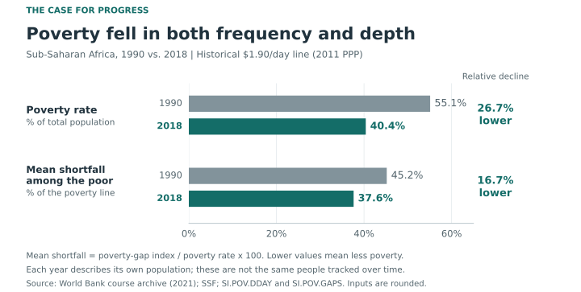
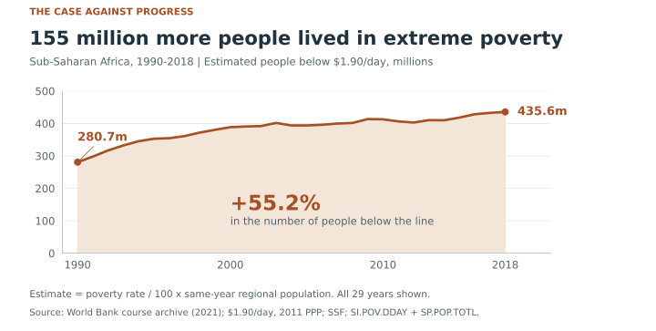

What counts as progress against poverty?
- Edison Xu (Submitter) · pix001@ucsd.edu
- Ye Teng · yeteng@ucsd.edu
- Jinhui Qiu · jiq016@ucsd.edu
- Yifeng Zheng · yiz337@ucsd.edu
Between 1990 and 2018, Sub-Saharan Africa made substantial progress against extreme poverty.
The answer changes with the measure. A smaller share of residents lived below the poverty line in 2018, and the average shortfall among those below it was smaller. Yet the estimated number of people below the line grew. The two charts use the same region and period to argue opposite sides of what counts as substantial progress.
Design scores: −2 = fully deceptive; +2 = fully earnest. These scores evaluate individual design choices, not the assignment grade.
The case for the proposition
Poverty fell in both frequency and depth

Design decisions and rationale
Lead with two measures that improved
-1Showing both the poverty rate and poverty depth makes a broader case for progress than the rate alone. It shows that the positive story is not only about crossing a threshold. The choice still leaves out the rising headcount, so the chart favors one reading of progress. The rate-only FOR 1 was easier to read, but it left depth out.
Compare the first and last years
-0.5Paired bars make the 1990–2018 changes easy to compare in a small space. They also hide the early increase and later pauses visible in the full rate series. The alternative FOR 1 keeps that history; this version gives priority to comparing the two measures.
Calculate shortfall among poor people
+2The poverty-gap index counts nonpoor residents as having zero shortfall, so it is not already an average among poor people. Dividing that index by the poverty rate and multiplying by 100 estimates the mean shortfall among poor residents as a percentage of the poverty line. This adds a measure of depth, but rounding makes it approximate and the changing population prevents a claim about the same individuals improving. Using the gap index directly would be simpler, but its average includes nonpoor residents and answers a different question.
Use zero-based bars with clear denominators
+1.5Both rows use the same zero-based scale, so bar lengths show the values without exaggerating the reductions. A narrower axis could make the changes look larger, but would distort the bar-length comparison. The row labels name different denominators: all residents for the rate, and the poverty line for average shortfall.
Label the size of each improvement
+1The direct values and relative reductions let readers see the size of each change without doing the calculation. Calling the changes 26.7% and 16.7% reductions supports the positive message, so the endpoints stay visible beside them. The caption also states the 14.7-percentage-point rate decrease to keep it separate from the relative percentage change. Showing only endpoint values would use less text, but would leave readers to calculate the reductions themselves.
The case against the proposition
155 million more people lived in extreme poverty

Design decisions and rationale
Estimate headcounts from matching records
+2Each year's poverty rate is divided by 100 and multiplied by the same year's population for region SSF. The one-to-one match has all 29 years, so no missing years were filled in. This turns a percentage into a human count, but the labels say estimated because the rate is rounded and population is also an estimate. Using rates alone would avoid this calculation, but would not show how many people remained below the line.
Judge progress by the number still poor
-1An increasing headcount makes the case against substantial progress stronger than a rate chart would. It directs attention to the scale of need instead of the share of residents affected. This is a choice of standard, not proof that the rate or depth improvements were false. A rate-only view would emphasize the share affected; the count keeps the number of people still below the line at the center of this argument.
Keep all 29 years and the zero baseline
+1.5The annual series shows that the larger 2018 count is part of a longer pattern, not just an isolated endpoint. Starting the filled area at zero keeps its height proportional to the count. The alternative AGAINST 2 explains population growth with two stacked bars, but does not show this yearly path.
Emphasize the added human burden
-0.5The filled area and headline about 155 million more people make the increase feel substantial. The headline rounds the estimated 154.9 million increase, while the labels give both endpoints and the 55.2% change. This framing can pull attention away from the falling rate, so the caption explains that both changes can be true. An unfilled line would look lighter, but the fill gives more visual weight to the scale of the count.
Keep the historical line and limits visible
+2The source note identifies the $1.90/day line in 2011 PPP terms and the historical archive. Keeping one definition across the series avoids mixing different poverty-line editions. The result concerns this region and period; it does not describe poverty today or identify which policies caused the change. A newer threshold would change the question, so both charts keep the course archive's definition.
Final reflection
Two true trends, two standards of progress
The calculations were straightforward once the records were matched by region and year. The harder choice was what substantial progress should mean. The rate fell, the average shortfall among poor residents fell, and the estimated headcount rose. The surprising part is that these results fit together: population more than doubled, outweighing the falling rate in the headcount calculation. A positive result on one measure does not settle the whole question.
The four candidate charts made the tradeoffs clear. FOR 1 is the easiest to follow and keeps the full rate history. FOR 2 needs more explanation, but adds poverty depth instead of repeating the rate alone. AGAINST 2 shows the growing population directly, including the much larger number at or above the line. AGAINST 1 makes the opposing case more clearly by following the estimated poor population through all 29 years. The final pair uses FOR 2 and AGAINST 1 to give both sides a distinct argument without changing the place, period, or threshold.
Working with these measures made us think beyond whether the calculations were correct. Choosing what to count already shapes what readers see as progress. A larger headcount does not mean nobody benefited, and a lower rate does not mean fewer people still needed help. The same boundary applies to the derived depth measure: it compares each year's poor population, not the same individuals. We think it is fair to argue that one measure matters more, as long as the units, formulas, threshold, and missing context remain clear. It becomes misleading when the selected measure is presented as the whole answer.
Sources and calculations
One region, one period, one historical line
Data: the course-linked World Bank Human Development Indicators archive, Sub-Saharan Africa (SSF), 1990–2018. Poverty rate: SI.POV.DDAY; poverty-gap index: SI.POV.GAPS; population: SP.POP.TOTL. The poverty indicators use the 2021 snapshot and the $1.90/day line in 2011 PPP terms. The gap index averages proportional shortfalls over all residents, assigning zero to nonpoor residents. Count = rate / 100 × population. Mean shortfall among poor residents (% of the line) = gap index / rate × 100. Derived values are approximate because the archived percentages are rounded. No uncertainty intervals are supplied. Regional aggregates hide country differences and do not establish causes.
Inspect the values behind the charts
| Year | Poverty rate (%) | Gap index (%) | Population (m) | Estimated poor (m) | Mean shortfall (%) |
|---|---|---|---|---|---|
| 1990 | 55.1 | 24.9 | 509.5 | 280.7 | 45.2 |
| 1991 | 56.9 | 26.1 | 523.7 | 298.0 | 45.9 |
| 1992 | 58.9 | 27.6 | 538.2 | 317.0 | 46.9 |
| 1993 | 60.1 | 28.2 | 553.0 | 332.4 | 46.9 |
| 1994 | 60.8 | 29.0 | 568.1 | 345.4 | 47.7 |
| 1995 | 60.5 | 28.7 | 583.4 | 353.0 | 47.4 |
| 1996 | 59.2 | 27.9 | 599.1 | 354.6 | 47.1 |
| 1997 | 58.7 | 27.5 | 615.1 | 361.0 | 46.8 |
| 1998 | 58.9 | 27.4 | 631.4 | 371.9 | 46.5 |
| 1999 | 58.7 | 27.1 | 648.1 | 380.5 | 46.2 |
| 2000 | 58.4 | 27.1 | 665.3 | 388.6 | 46.4 |
| 2001 | 57.2 | 26.3 | 683.0 | 390.7 | 46.0 |
| 2002 | 55.9 | 25.1 | 701.1 | 391.9 | 44.9 |
| 2003 | 55.8 | 24.6 | 719.7 | 401.6 | 44.1 |
| 2004 | 53.3 | 23.1 | 739.0 | 393.9 | 43.3 |
| 2005 | 51.9 | 22.2 | 758.9 | 393.9 | 42.8 |
| 2006 | 50.8 | 21.5 | 779.6 | 396.0 | 42.3 |
| 2007 | 49.9 | 20.8 | 800.9 | 399.7 | 41.7 |
| 2008 | 48.8 | 20.0 | 822.9 | 401.6 | 41.0 |
| 2009 | 48.9 | 20.1 | 845.7 | 413.5 | 41.1 |
| 2010 | 47.5 | 19.1 | 869.0 | 412.8 | 40.2 |
| 2011 | 45.5 | 17.9 | 893.0 | 406.3 | 39.3 |
| 2012 | 43.9 | 17.0 | 917.7 | 402.9 | 38.7 |
| 2013 | 43.5 | 16.7 | 943.0 | 410.2 | 38.4 |
| 2014 | 42.3 | 16.1 | 969.0 | 409.9 | 38.1 |
| 2015 | 42.0 | 15.9 | 995.5 | 418.1 | 37.9 |
| 2016 | 41.9 | 15.9 | 1022.5 | 428.4 | 37.9 |
| 2017 | 41.2 | 15.6 | 1050.2 | 432.7 | 37.9 |
| 2018 | 40.4 | 15.2 | 1078.3 | 435.6 | 37.6 |
Mean shortfall is a percentage of the poverty line among people below it; the poverty rate is a percentage of all residents. Displayed values are rounded. The CSV retains calculation precision.